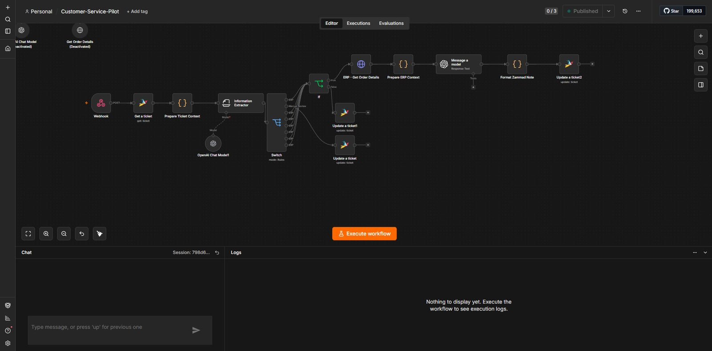
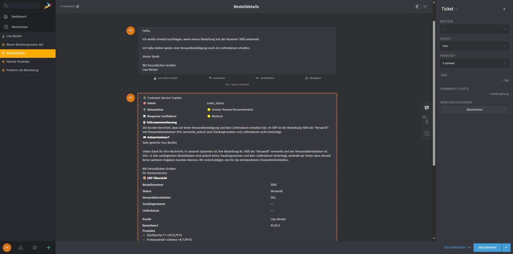
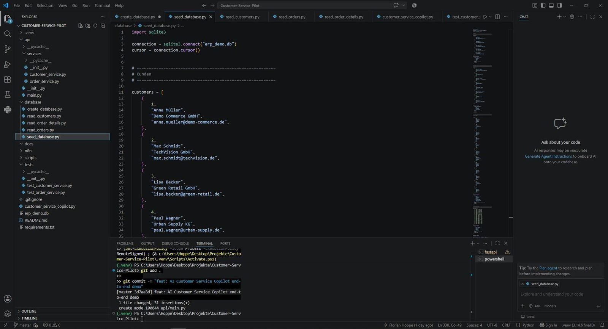
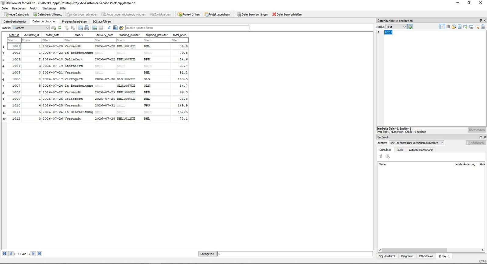
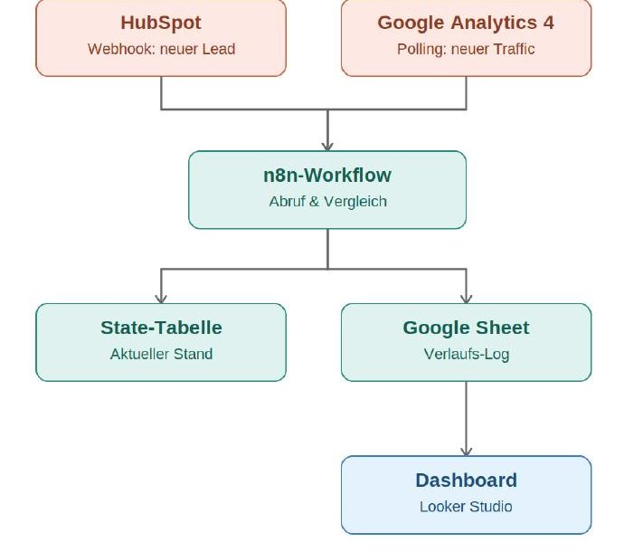
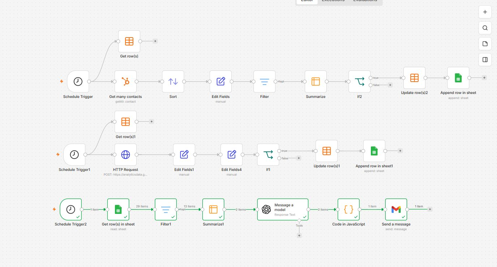
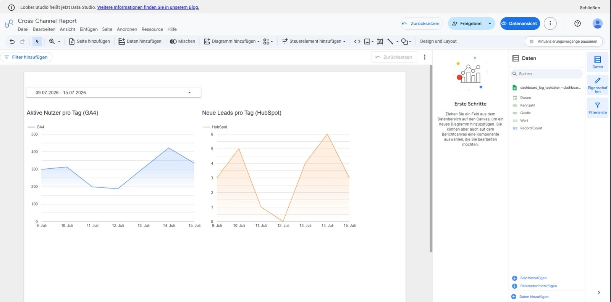
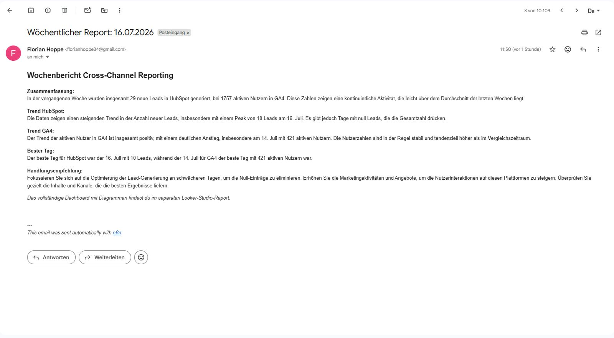
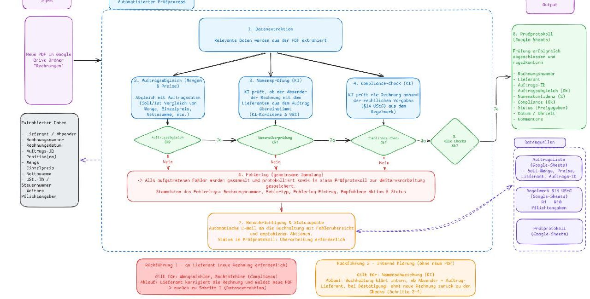
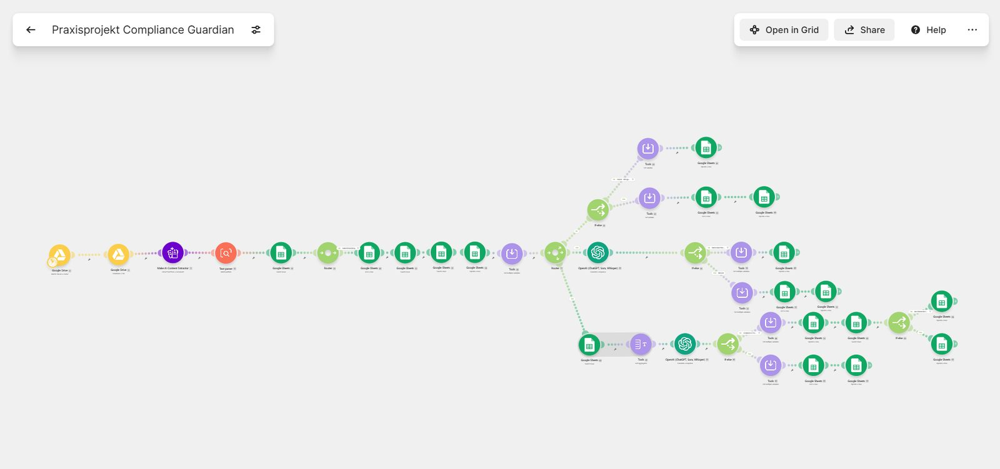

Florian Hoppe
Automation & Operations Manager
Ich verbinde Marketing-, Sales- und Service-Systeme durch Automation — von der ersten Prozessidee bis zum produktiven n8n- oder Make.com-Workflow, oft mit einem KI-Modell als Entscheidungsschicht.
Über mich
Ich komme aus dem Performance Marketing und habe mich in den letzten Monaten gezielt auf No-Code- und Low-Code-Automation spezialisiert — mit einer rund zweimonatigen Vollzeit-Weiterbildung zum Automation Engineer als Fundament. Heute baue ich Workflows, die CRM-, Analytics-, Ticket- und ERP-Systeme über Tools wie n8n und Make.com miteinander verbinden und KI-Modelle dort einsetze, wo sie echten Mehrwert schaffen: bei Intent-Erkennung, Dokumentenauswertung oder strukturierten Analysen. Mein Ziel ist eine Rolle, in der ich diese Automatisierungskompetenz mit Prozess- und Team-Verantwortung verbinden kann — ob als Automation- oder RevOps-Rolle im engeren Sinn oder als Digitalisierungs- oder Marketing-Position, bei der Automatisierung im Kern der Arbeit steht.
Case Studies
Drei Automatisierungsprojekte, vom Prototyp bis zum funktionierenden End-to-End-Workflow — inklusive Architektur, technischer Entscheidungen und Screenshots.
Ausgangslage
Ein Großteil eingehender Kundenanfragen dreht sich um wiederkehrende Themen — Bestellstatus, falsche oder beschädigte Lieferungen, Stornierungen. Bislang muss dafür jemand manuell im ERP nachschauen und die Informationen im Ticket zusammentragen. Dieses Projekt zeigt einen KI-Agenten, der eingehende Service-E-Mails direkt am Ticket-Eingang übernimmt, das Anliegen klassifiziert und alle relevanten Infos strukturiert ins Ticket schreibt.
Prozessübersicht
- Ticket-Eingang: Eine eingehende Service-E-Mail erzeugt automatisch ein Ticket in Zammad, per Webhook an n8n übergeben.
- Kontextaufbereitung: Der Workflow ruft die Ticketdaten ab und bereitet den Kontext für die Weiterverarbeitung auf.
- Intent-Erkennung: GPT-4.1 mini klassifiziert das Anliegen in Bestellstatus, falsche Lieferung, beschädigte Lieferung oder Stornierung.
- Routing per Switch: Fälle mit geringer Erkennungssicherheit werden zur manuellen Prüfung markiert statt automatisch weiterverarbeitet.
- ERP-Abfrage: Der Agent ruft gezielt Bestelldaten über eine containerisierte REST-API ab (Python/FastAPI, SQLite).
- Antwortgenerierung: Das Modell formuliert Intent, Automatisierungs-Empfehlung, Response-Confidence, Fallzusammenfassung, Antwortentwurf und ERP-Übersicht.
- Rückschreiben ins Ticket: Die strukturierte Ausgabe landet als formatierte Notiz direkt im Zammad-Ticket.
Zentrale technische Entscheidungen
- Ticket- statt Chat-Einstieg: Umstellung von einem Chat-Trigger auf einen Ticket-/E-Mail-Trigger, damit der Copilot dort ansetzt, wo Anfragen im Service-Alltag tatsächlich eingehen.
- Mehrklassige Intent-Erkennung: Statt nur Bestellstatus erkennt der Agent mehrere Anliegen-Typen und leistet so für einen größeren Teil des Anfragevolumens automatisiert Vorarbeit.
- Tool-Calling statt freiem Prompting: Bestelldaten werden aktiv über ein definiertes Tool abgerufen — das verhindert Halluzinationen bei konkreten Fakten wie Status oder Sendungsnummer.
- Eigenständiges Demo-ERP: SQLite und eine selbst gebaute FastAPI dienen bewusst als Ersatz für ein reales CRM/ERP, um den vollständigen Ablauf nachvollziehbar zu machen.
Screenshots




Ergebnis
Ein funktionierender Prototyp eines LLM-Agenten mit Tool-Calling, direkt eingebettet in den realen Service-Workflow über ein Ticket-System — vom automatischen Eingang über Intent-Erkennung und gezielten Datenabruf bis zur strukturierten Rückschreibung. Als Nächstes ist ein @copilot-Befehl direkt im Ticket geplant, über den Mitarbeitende gezielt Rückfragen stellen können.
Ausgangslage
Marketing- und Vertriebsteams arbeiten oft mit getrennten Systemen — einem CRM für Leads und einem Analytics-Tool für Website-Traffic. Ohne Automatisierung bedeutet das manuelles Zusammentragen von Zahlen, verzögerte Reaktionszeiten und Reports, die im Kalender versanden. Diese Case Study zeigt, wie sich zwei unabhängige Datenquellen automatisiert zusammenführen, historisch protokollieren, visualisieren und wöchentlich KI-gestützt auswerten lassen — vollständig ohne manuellen Eingriff.
Prozessübersicht — drei parallele Stränge
- Erfassung HubSpot: Ein zeitgesteuerter Trigger ruft periodisch neue Kontakte ab, vergleicht sie gegen den letzten Stand und zählt tatsächlich neue Leads.
- Erfassung GA4: Da GA4 keine Webhooks unterstützt, läuft dies per Polling gegen die Data API; die Differenz aktiver Nutzer wird berechnet und geloggt.
- Wöchentliche Auswertung: Ein Freitags-Trigger liest die komplette Historie, aggregiert die Werte pro Quelle und übergibt sie an ein KI-Modell, das Trend-Einordnung, Bestwert-Tag und Handlungsempfehlung als JSON liefert — automatisch per E-Mail verschickt, parallel zum PDF-Dashboard aus Looker Studio.
Zentrale technische Entscheidungen
- Polling statt Webhook bei GA4: Da GA4 keine Webhook-Funktion bietet, bewusste Entscheidung für Intervall-Polling mit State-Vergleich statt einer unvollständigen Lösung.
- Trennung von State und Historie: Eine schlanke State-Tabelle für schnelle Vergleiche, ein Google Sheet als lesbare, erweiterbare Datengrundlage für Visualisierung und Analyse.
- Zählen statt Ja/Nein: Statt nur "neue Aktivität" zu erfassen, wird die tatsächliche Anzahl neuer Leads bzw. die Nutzer-Differenz berechnet — das macht die Auswertung erst aussagekräftig.
- Strukturierte KI-Ausgabe: Die Analyse kommt als valides JSON mit festen Feldern statt freiem Fließtext — zuverlässig weiterverarbeitbar für E-Mails oder künftige Dashboard-Integration.
Screenshots




Ergebnis
Der vollständige Automatisierungs-Zyklus von der API-Anbindung mehrerer Systeme über State-Management und Datenmodellierung bis zur KI-gestützten Analyse und automatisiertem Reporting — praktisch gezeigt, wie sich Marketing-Kennzahlen aus getrennten Systemen ohne manuellen Aufwand zusammenführen und in konkrete wöchentliche Handlungsempfehlungen übersetzen lassen.
Ausgangslage
Rechnungsprüfung ist in vielen Unternehmen ein manueller, fehleranfälliger Prozess: Eingehende Rechnungen müssen gegen die ursprüngliche Bestellung und gegen gesetzliche Pflichtangaben nach §14 UStG abgeglichen werden, bevor eine Freigabe erfolgen darf. Am Beispiel der fiktiven Traditio GmbH zeigt dieses Projekt, wie sich dieser dreistufige Prüfprozess automatisieren lässt — inklusive KI-gestützter Dokumentenauswertung und differenzierter Fehlerbehandlung.
Prozessübersicht
- Datenextraktion: Relevante Rechnungsdaten werden aus der PDF extrahiert (Lieferant, Rechnungsnummer, Auftrags-ID, Beträge, Pflichtangaben).
- Auftragsabgleich: Soll-/Ist-Vergleich von Menge, Einzelpreis und Nettosumme gegen die hinterlegte Auftragsliste.
- Namensprüfung (KI): Abgleich von Rechnungsabsender und hinterlegtem Lieferanten inklusive Konfidenzwert (Schwelle ≥ 90 %).
- Compliance-Check (KI): Abgleich gegen das hinterlegte Regelwerk nach §14 UStG (Regeln R1–R10).
- Freigabe oder Fehlerlog: Nur bei drei erfolgreichen Checks wird automatisch freigegeben; sonst wird der Fehler zentral protokolliert und die Buchhaltung per E-Mail benachrichtigt.
Zentrale technische Entscheidungen
- Konfidenzbasierter Namensabgleich: Der KI-Abgleich liefert einen Prozentwert statt nur Ja/Nein — verhindert, dass geringfügige Schreibweise-Unterschiede automatisch als Fehler gewertet werden, markiert unsichere Fälle aber korrekt zur manuellen Prüfung.
- Zwei getrennte Rückführungspfade: Fehler, die eine neue Rechnung erfordern, und Fehler, die nur interne Klärung brauchen, laufen über unterschiedliche Wege zurück in den Prozess.
- Regelwerk als eigene Datenquelle: Die zehn Pflichtangaben nach §14 UStG liegen als eigene, wartbare Tabelle vor statt hartkodiert im Workflow.
- Trennung von Fehlerlog und Prüfprotokoll: Ermöglicht Nachverfolgbarkeit sowohl auf Fehler- als auch auf Rechnungsebene.
Screenshots


Testergebnisse
| Rechnung | Lieferant | Auftrag | Namenskonfidenz | Compliance | Status |
|---|---|---|---|---|---|
| RE-9904 | TechCorp GmbH | OK | 100% | OK | Freigegeben |
| RE-9903 | DesignStudio Berlin | OK | 95% | Fehler (Steuernummer fehlt) | Manuelle Prüfung |
| RE-9902 | Mueller & Soehne | Fehler (Menge/Summe) | 100% | Fehler (Zeitpunkt fehlt) | Manuelle Prüfung |
| RE-9901 | TechCorp | OK | 70% | Fehler (Zeitpunkt fehlt) | Manuelle Prüfung |
Ergebnis
Eine mehrstufige, KI-gestützte Prüflogik mit differenzierter Fehlerbehandlung: Statt einer einfachen Ja/Nein-Automatisierung entstand ein System, das zwischen Fehlerarten unterscheidet, passende Rückführungswege wählt und durch konfidenzbasierte Schwellenwerte Fehlalarme vermeidet — validiert mit vier realistischen Testrechnungen.
Lead-Segmentierung
In Vorbereitung — nächstes Case-Study-Projekt.
Werkzeuge, die ich einsetze
Automation & Orchestrierung
CRM & Marketing
KI & Daten
Entwicklung & Infrastruktur
Reporting & Analytics
Lass uns sprechen.
Offen für Rollen im Automation-, RevOps- oder Ops-Manager-Umfeld sowie für Digitalisierungs- und Marketing-Positionen mit Automatisierung im Kern — intern, remote oder in Leipzig.